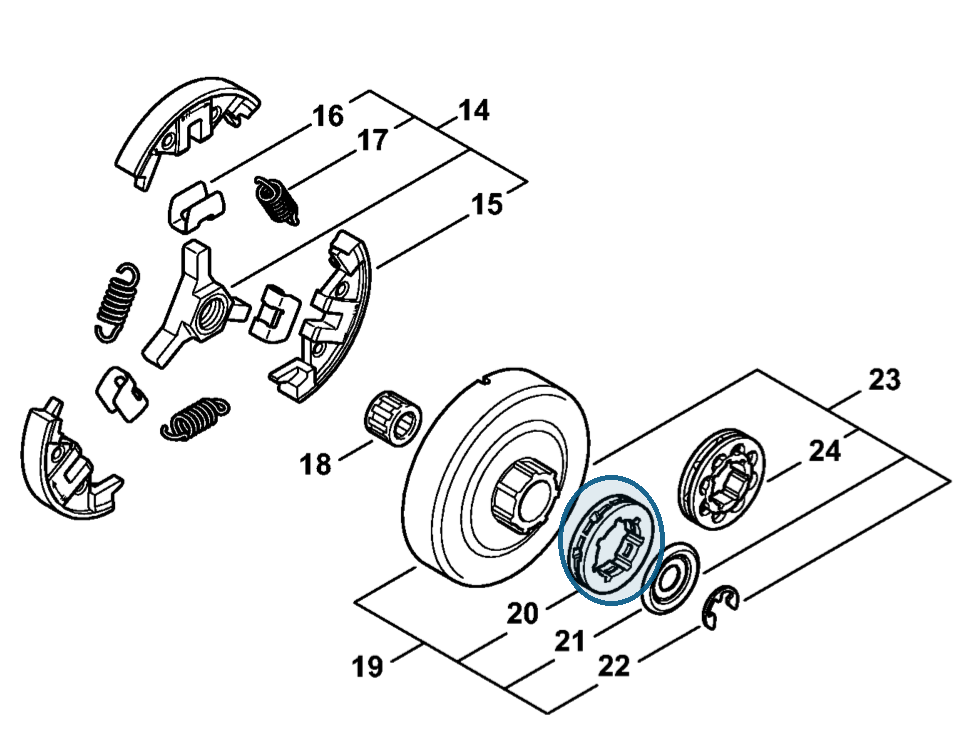

Rim sprocket 3/8" 7T
0000 642 1223
MS 462 — rim sprocket
3/8-inch pitch; 7 teeth. The FRK also contains the separate 8-tooth kit 1128 007 1001.
Item 20 Qty listed: 1

MS 462 C-M Z spare-parts list, 10/29/2024. Drawing p. 13; parts table p. 14.